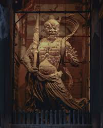

はじめに：東大寺とは？
東大寺は奈良県奈良市にある有名なお寺で、奈良時代の743年に聖武天皇の命令によって建てられました。 当時、日本では災害や疫病が多く、人々の不安が広がっていました。 そこで聖武天皇は「仏教の力で国を守り、人々を安心させたい」と願い、 全国の力を集めて東大寺と大仏を造りました。
現在は世界遺産にも登録されており、日本を代表する歴史的建造物として多くの観光客が訪れています。
1. 奈良の大仏さま（盧舎那仏）
東大寺の中心にあるのが「奈良の大仏」と呼ばれる盧舎那仏です。 この仏像は「世界を照らす光の仏」という意味を持っています。
- 高さ： 約15メートル
- 顔の大きさ： 約5メートル
- 目の長さ： 約1メートル
銅で作られており、完成までに多くの人々の努力と時間がかかりました。 何度も焼失しましたが、そのたびに再建され、今も堂々と立っています。
2. 金剛力士像
南大門に立つ金剛力士像は、寺を悪いものから守る役割を持っています。 口を開けた「阿形」と、口を閉じた「吽形」が対になっています。
3. 二月堂

二月堂は「お水取り」という伝統行事で有名な場所です。 毎年3月に行われ、1200年以上続いている行事です。
舞台からは奈良市内を一望でき、夕方になるととても美しい景色を見ることができます。 静かな雰囲気の中で歴史を感じられる場所です。
4. 奈良公園の鹿

東大寺の周辺には奈良公園があり、多くの鹿が自由に歩いています。 鹿は春日大社の神様の使いとして大切にされてきました。
鹿せんべいをあげるとお辞儀をする姿も見られますが、 野生動物なので安全に気をつけながら接することが大切です。
まとめ
東大寺は、ただ大きいだけのお寺ではありません。 人々の平和への願いと努力が込められた、日本の歴史を象徴する建物です。 実際に訪れると、その大きさや空気感に圧倒されます。 ぜひ一度、現地でその迫力を体験してみたいと思いました。